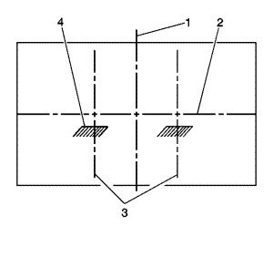
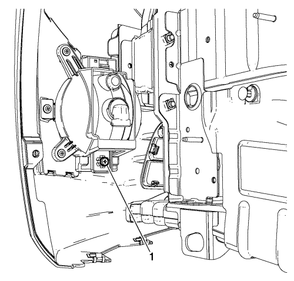

Enfoque de los faros antiniebla
Procedimiento de preparación
Nota: El apuntado horizontal no es ajustable en este vehículo. El apuntado vertical se realiza mediante una tuerca de ajuste situada en la parte trasera del faro antiniebla. Antes de apuntar los faros antiniebla, ejecutar los pasos siguientes:
- Ensamblar completamente todos los componentes del vehículo.
- Situar el vehículo sobre una superficie horizontal.
- Detener todas las operaciones innecesarias que pudieran afectar a la altura de marcha del vehículo.
- Cerrar las puertas y verificar que el maletero está vacío.
- Estabilizar la suspensión haciendo bascular el vehículo lateralmente.
- Asegurarse de que el depósito de combustible esté lleno.
- Asegurarse de que los neumáticos se inflan a las presiones adecuadas.
- Asegurarse de que estén en el asiento del conductor, el conductor o un peso equivalente, unos 75 kg (165 lib.).
Procedimiento de apuntado

- Aparque el vehículo a 7,6 m (25 pies) de la pantalla.
- Medir desde el centro del faro antiniebla a la línea del suelo. Utilizando esta medición, marcar la línea central horizontal (2) del faro antiniebla en la pantalla directamente delante del vehículo.
- Encender los faros antiniebla. La parte superior de la imagen del haz del faro antiniebla (4) en la pantalla debe estar 102 mm (4 pulg.) por debajo del centro de la altura de la lente del faro antiniebla.

- Ajuste el faro antiniebla según sea necesario utilizando el tornillo de ajuste (1) por encima de la lente protectora en la parte exterior del tablero de protección del paragolpes.
- Apagar los faros antiniebla.
| © Copyright Chevrolet Europe. All rights reserved |